What we're listening for, and why the split matters
Two Kinds of Acoustic Targets
Tonal call — e.g. baleen whale moan
Sustained, narrowband, low-frequency — a stable tone held over seconds.
Biosonar clicks — e.g. sperm whale / dolphin
Short, broadband, rhythmic pulses — literal biological sonar, used to hunt and navigate.
54
Species
15,248
Clips
1934–2001
Recording span
A Long Tail Spanning Three Orders of Magnitude
2,647× more clips
Killer whale (most-recorded) vs. harbour seal (single clip) — a genuine property of a 70-year opportunistic archive, not a preprocessing artifact.
Why Split by Recording, Not by Clip
Clips cut from the same original tape share a noise floor, a distance, an individual animal. A model can "recognize the recording" instead of the species.
clip_randomLeaky
TRAIN
TEST
Both tapes (teal / amber) appear on both sides — test clips can be near-duplicates of training clips.
tape_groupedHonest
TRAIN
TEST
Each tape's clips stay on one side — test performance reflects generalization to a new recording.
Part 2 · Notebook 01
Waveform → Spectrogram
Turning 1D pressure into a 2D image a model can see
The Short-Time Fourier Transform
1. Waveform
pressure vs. time
2. Slide a window
n_fft samples, hop apart
3. FFT each window
magnitude per frequency bin
4. Stack → spectrogram
freq
real clip · time →, color = energy
Window Length: a Real Trade-off, Not a Knob to Max
10ms window / 5ms hop
Fine time, coarse frequency — catches fast clicks, blurs tonal pitch.
25ms window / 10ms hop
Balanced — the speech-processing default this project starts from.
64ms window / 32ms hop
Fine frequency, coarse time — precise tonal pitch, blurs transients.
Mel Scale vs. Linear Frequency (LOFARgram)
Mel-scaled — what the CNNs/AST train on
low freq: spread outhigh: compressed
Harmonics warp and bunch together at higher pitch — a good prior for speech, debatable for physical tonals.
Linear frequency — LOFARgram, zoomed to 0–4kHz
evenly spaced, every recording
Tonal harmonics stay at a fixed row — easy to track by eye or algorithm, the classical starting point for passive-sonar target classification.
So Why Train Models on Mel, Not LOFAR?
Three practical reasons — not because mel is theoretically better for tracking tonal harmonics.
Transfer-learning fit — ResNet/EfficientNet expect ImageNet-like input; AST was pretrained on AudioSet's own log-mel features. Matching that cuts the domain shift.
Compact input — 64 mel bins vs. 500+ linear FFT bins across the same 8kHz. Keeps the CNN input small and tractable.
Dynamic range — log compression tames huge loudness swings into something closer to Gaussian, which trains and normalizes better.
open question
Mel is a speech-processing convention, not a proven-optimal choice here — it's what warps tonal harmonics off a fixed row on the previous slide. Does mel vs. linear actually move classifier accuracy? Nobody's tested it yet in this project (docs/next_steps.md).
Per-Instance Normalization
Clips in this archive span a 64:1 loudness ratio. Without normalizing, a model could “solve” much of the task by intensity alone. LogMelSpectrogram z-scores every clip against its own mean and std.
Raw dB — one absolute scale
Z-scored — one absolute scale
loudest −15.5 dB
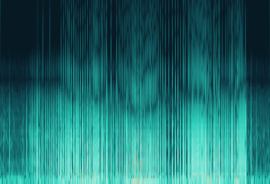
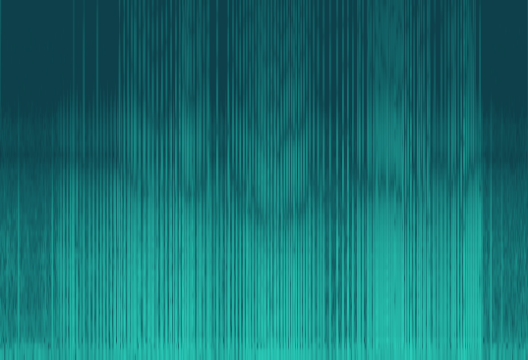
quietest −32.9 dB
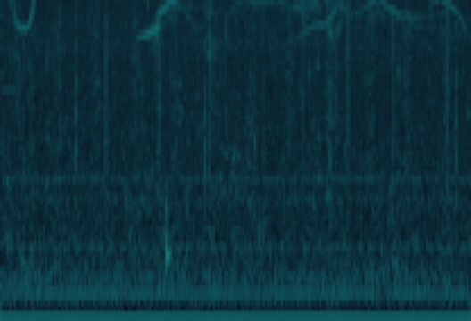
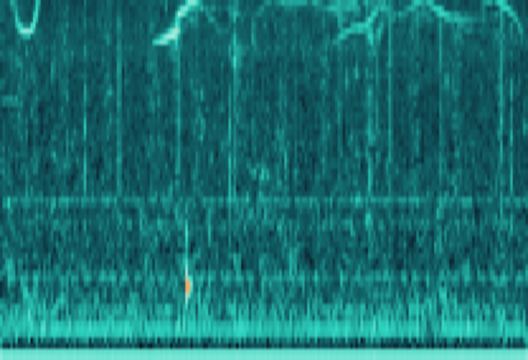
the trap
Z-scoring is an affine map, and every plotting library autoscales each image to its own min/max by default. Do that and the raw and normalized panels come out pixel-for-pixel identical — which reads as “normalization did nothing” when it actually means the plot threw away the only thing that changed. Normalization never alters the shape within one spectrogram; it moves where that shape sits on an absolute scale. Pin vmin/vmax or you cannot see it.
Part 3 · Notebook 01
Signal Processing for Biosonar
Filters & envelopes · DEMON · matched filtering — and matching the tool to the signal
Three Primitives, Endlessly Recombined
Everything in this section — DEMON, matched filtering, the detector that reads a click rate — is these three operations composed. Worth being precise about each before stacking them.
1 · Filter
Frequency-selective gain. Keep some frequencies, attenuate the rest. Nothing more — it doesn't know what a click is, only which bands to pass.
2 · Envelope
The amplitude outline. Throws away the fast carrier, keeps how loud the signal is over time. A click train's rhythm lives here, not in the waveform.
3 · Correlation
Shape similarity vs. position. Slide a reference pattern along and score the match everywhere. Answers where, not how loud.
What a Filter Actually Does
Same 0.4s of a sperm whale click train through each. All three panels share one vertical scale — autoscale each and you hide the only thing a filter does, which is remove energy.
Unfiltered
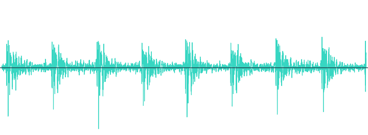
Clicks, plus everything else the hydrophone heard.
Low-pass · 500Hz
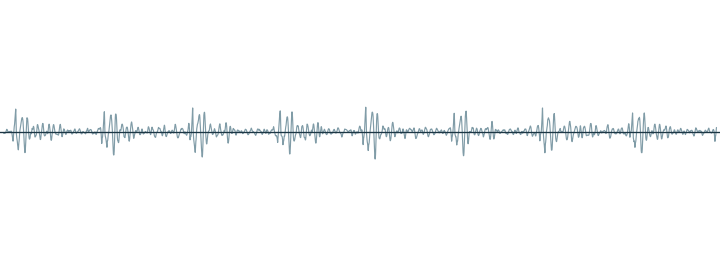
Keeps the slow rumble — and a click train has almost none. Nearly everything is gone.
High-pass · 2kHz
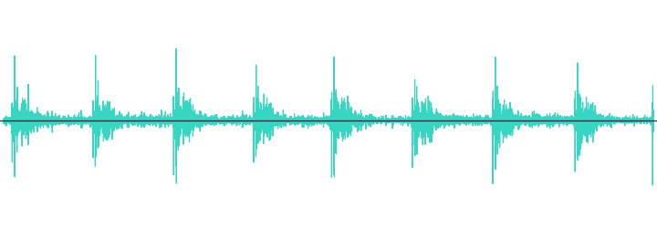
Clicks survive intact, background thins out. DEMON's first step.
why high-pass first
Biosonar clicks are broadband; the clutter you want gone — flow noise, hull vibration, distant shipping — is low-frequency. The same asymmetry the technique was built on for propeller cavitation.
What an Envelope Is
1 · High-passed
Oscillates fast and symmetrically around zero — averaged over any window it is simply ~0.
2 · Rectified · |x|
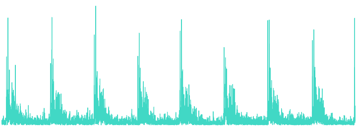
Fold the negative half up. This is the demodulation: fast oscillation becomes a slow positive bump per click.
3 · Low-passed → envelope
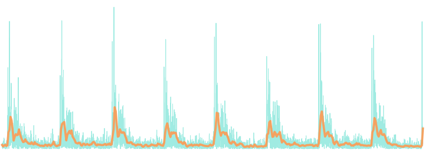
Smooth away the leftover ripple. What remains is one clean hump per click.
The whole clip's envelope — SpermWhale 7501101V, the pulse train everything downstream measures
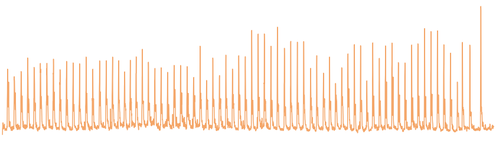
The carrier is discarded on purpose. A click's fine waveform structure is the part 16kHz resampling and the recording chain destroy. Its amplitude over time survives — so that is what we keep.
Decimate 16kHz → 1kHz. Click rates are tens of Hz. Carrying the envelope at audio rate spends almost every later FFT bin on frequencies no repetition rate can occupy.
Matching the Representation to the Signal
Two target classes, three representations. Each signal is legible in exactly one of them — which is why a pipeline that only ever computes a spectrogram sees half the story.
Tonal moan — HumpbackWhale 58018011
Click train — SpermWhale 7501101V
LOFARgram linear freq
reads it
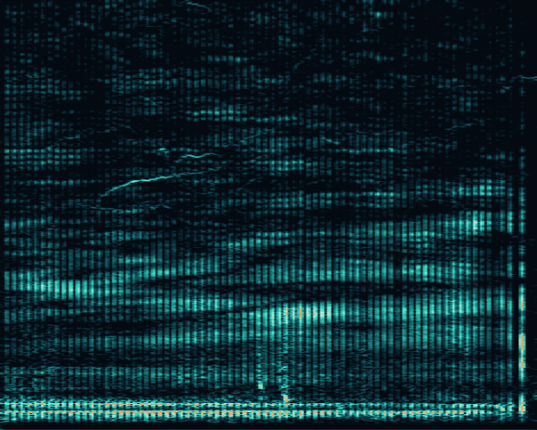
Envelope
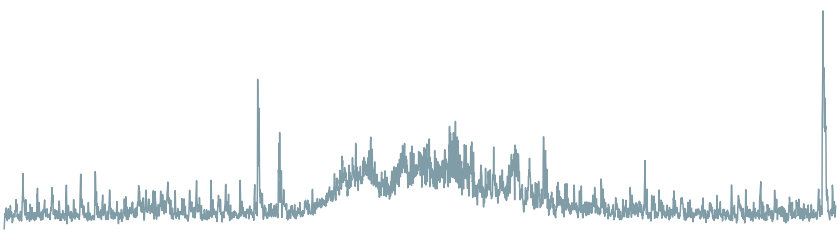
reads it
DEMON spectrum
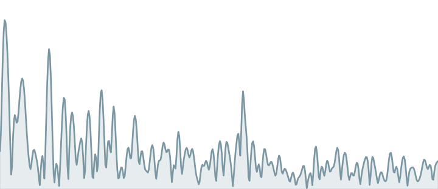
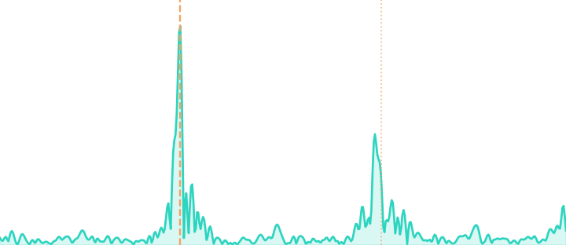
reads it
Horizontal lines vs. vertical striations · flat envelope vs. pulse train · noise floor vs. a 20.5Hz spike — same two clips throughout.
DEMON: Reading a Click-Repetition Rate
DEmodulation of envelope On Noise — originally built to read a ship's propeller shaft rate off cavitation noise; here it reads a click train's own rhythm. Click through the five stages:
1. Click train
2. High-pass
3. Rectify
4. Low-pass envelope
5. FFT the envelope
Click train. A click train is broadband pulses fired at a steady rate. In the raw waveform, each click's own high-frequency content can hide the fact that the pulses themselves repeat periodically — that periodicity is what DEMON is built to expose.
High-pass. Filtering out low frequencies strips away clutter — flow noise, hull vibration, distant shipping — leaving mostly the broadband click energy. It's the same first step used to isolate propeller cavitation from a ship's own machinery tones.
Rectify. Full-wave rectification (absolute value) folds the negative half of the waveform onto the positive half. This is the actual demodulation step — it converts fast carrier oscillation into a slower amplitude pattern: a series of positive bumps.
Low-pass envelope. Low-pass filtering the rectified signal smooths away leftover high-frequency ripple, leaving a clean envelope that rises and falls with the click train's own rhythm — a hump for every click.
FFT the envelope. FFT of this envelope — not the original waveform — produces the DEMON spectrum. A sharp, isolated peak reads the pulse-repetition rate directly in Hz: for an echolocating animal, literally how many clicks per second, a number no ordinary spectrogram shows as a single value. The transform must run over the whole decimated envelope — resolution is 1/duration.
DEMON on Real Clips
SpermWhale 7501101V — click train
20.5Hz
click rate
49ms
between clicks
34×
the band median
Sharp, isolated, and with its 2nd harmonic at 41Hz — a pulse train is not a sine wave, so it has overtones. Counting peaks in the envelope by hand gives 20.0Hz independently.
HumpbackWhale 58018011 — tonal moan
2.7Hz
argmax says…
6×
the band median
none
harmonic
There is a peak — argmax always returns something. It sits against the DC edge, is barely above its own noise floor, and has no overtone. This is what “nothing to find” looks like.
the bug this replaced
The first implementation passed a fixed n_fft=4096 at the 16kHz audio rate. rffttrims to that length — so it saw the first 0.26s of a 3.7s clip and quantized to 3.9Hz bins: 13 usable points below 50Hz. Decimating first and transforming the whole envelope gives 0.12Hz bins.
Matched Filtering: Detecting a Known Shape
The idea, in one animation: a bank of three different reference templates (click, tonal wavelet, chirp) slides across a hydrophone waveform, and the bank flashes amber exactly where a shape lines up. The next slide is about what you slide it across — which turns out to decide whether any of this works.
Real clip (sperm whale, 61027002.wav), template bank searching across it
Correlation response, traced live
Loops continuously — three template shapes (click / tonal / chirp), one signal, one dot tracing the response.
Correlate Envelopes, Not Waveforms
The obvious approach — and it fails
Cut 50ms of raw waveform centred on a click, correlate it across three test clips. Peak correlation:
SpermWhale · same tape
0.30
SpermWhale · other tape
0.37
HumpbackWhale · other species
0.29
The wrong species scores level with the right one. No threshold on this number separates them. A click's fine waveform structure is exactly what 16kHz resampling and the recording chain destroy — two clicks off different tapes simply do not have the same waveform.
What survives, and what to build from it
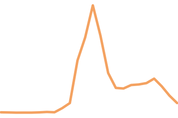
25ms template
Correlate the envelope, and build the template by averaging the strongest 40 pulses rather than picking one.
Averaging suppresses the noise realization that happened to sit under any single click.
The envelope keeps the repeatable part: burst shape and, above all, timing.
average_pulse_template raises rather than returns garbage when a clip holds no detectable pulse train.
The Statistic Has to Change Too
Peak height cannot discriminate: a normalized correlation compares shape, and in a 1kHz envelope a walrus knock, a song onset and a sperm whale click are all just “a transient”. What separates a click train is that matches arrive at a regular spacing.
SpermWhale · same tape
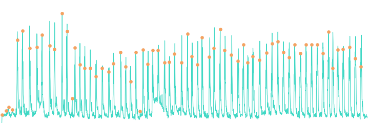
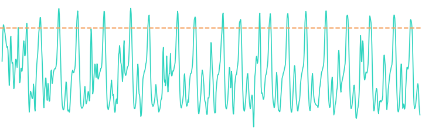
SpermWhale · other tape
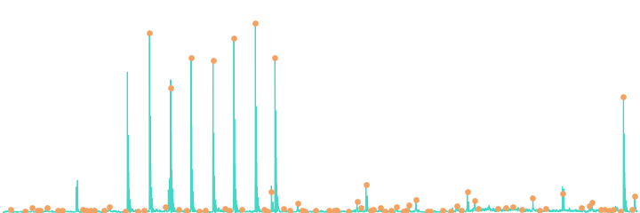
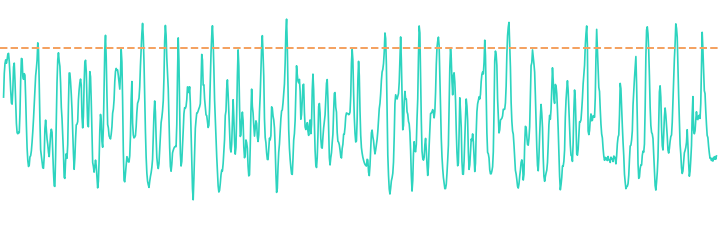
HumpbackWhale
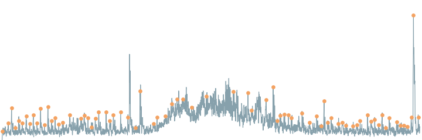
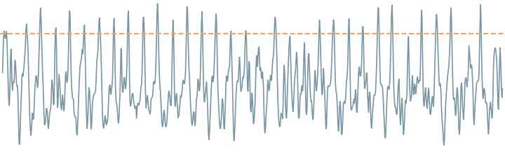
detections
rate
CV of gaps
on a real pulse
SpermWhale · same tape
67
20.8/s
0.20
91%
SpermWhale · other tape
86
22.7/s
0.56
19%
HumpbackWhale
76
33.3/s
0.68
42%
two metrics, not one
A scale-free correlation fires happily on the noise floor, and a train of those can be regular too. The middle column detects 86 things at a plausible-looking 22.7/s — but only 19% sit on an actual click. The CV alone would have looked fine.
A Template Bank — and What It Really Buys
Four SpermWhale clips from four different tapes, none sharing a tape with any test clip. matched_filter_bank takes the elementwise max, so a match against any member counts. Each cell: CV of detection gaps, then % of detections on a real pulse — or guarded where there were too few detections to estimate either.
test clip
93570011
72009005
9357300H
9358400V
the bank
SpermWhale · same tape
n=13 · guarded
0.29 · 89%
0.94 · 85%
1.14 · 67%
0.29 · 75%
SpermWhale · other tape
0.52 · 16%
0.57 · 19%
0.58 · 18%
0.59 · 15%
0.45 · 12%
HumpbackWhale
0.81 · 40%
0.89 · 44%
0.98 · 50%
0.67 · 36%
0.63 · 41%
It removes the gamble. On the same clip one member scores 0.29, two score 0.94 and 1.14, and the fourth fires only 13 times — too few to score at all. Nothing marks the good one in advance; the bank tracks it anyway.
The gap doesn't widen. The humpback's CV falls to 0.63 too — better than any member alone. More templates means more chances to fire, and denser false detections are more evenly spaced ones.
Row 2 is a trap. The bank posts that row's best CV (0.45) with its worst on-pulse figure (12%). It got more regular by chasing the noise floor more consistently.
Where That Separation Actually Comes From
Two SpermWhale clips, both containing real click trains, score 0.20 / 91% and 0.56 / 19%. Across all 1,184 SpermWhale clips this template runs on, the CV interquartile range is 0.56–0.79 — clip-to-clip spread swamps everything else here.
The obvious suspect: tape
template 7501101V
n
CV
on pulse
its own tape
59
0.45
78%
every other tape
1,125
0.69
57%
Same-tape clips do score better. But this cannot separate “the template matches this tape” from “this tape has cleaner click trains”.
The control: swap the template
template (its tape)
750110
720090
935700
7501101V (750110)
0.45
0.62
0.70
72009005 (720090)
0.44
0.61
0.72
93570011 (935700)
0.69
0.67
0.73
Amber = shared tape. The diagonal is not special. Tape 750110 scores 0.45 with its own template and 0.44 with a foreign one; 93570011 does worst on its own tape.
what the control changed
A column effect (some tapes hold cleaner click trains) and a row effect (some clips make better templates) — not tape matching. An earlier version of this deck claimed “a template is substantially a tape detector” from three hand-picked clips. It did not survive the swap. Three clips plus a plausible mechanism is how a confident wrong conclusion gets made.
Track-before-detect & ROC tuning Hits link into tracks; threshold set from a labeled ROC curve.
the honest gap
This project's matched_filter_bank covers #1's core math in the time domain and a miniature #2 (four averaged envelope templates, one per tape). #3–#6 are real, scoped extension work — and the per-recording spread on the previous slide is exactly what #2 and #6 exist to absorb.
Part 4 · Notebooks 02–04
Three Classifier Architectures
From-scratch CNN · ImageNet transfer · AudioSet transformer
Baseline CNN: the Floor Every Model Must Beat
log-mel input
conv·bn·relu maxpool ×4
avg
global avg pool
linear
classifier head
54
species
~403K parameters
No pretraining. If a bigger model can't beat this by a real margin, its extra complexity isn't earning its keep.
Transfer Learning: What Actually Transfers
Not "knowing what a dog looks like" — the low-level visual vocabulary (edges, textures, blobs) early layers learn, useful for any 2D signal with local structure.
Frozen backbone (linear probe)
pretrained backbone (untouched)
head trains (fast, cheap)
Fine-tuned
backbone nudges (small LR)
head trains (faster LR)
AST: Self-Attention Over Spectrogram Patches
Every patch attends to every patch, from layer 1
amber = query patch · teal = attended patches, anywhere in the image
CNN
Local receptive field — distant patches only interact after many stacked layers.
Transformer (AST)
Global from layer 1 — a click at t=0.1s can directly attend to a tonal at t=2.9s.
Pretrained on AudioSet (2M+ clips, general sound events) — closer domain than ImageNet, but still no underwater audio.
Part 5 · Notebook 05
Evaluating an Imbalanced Classifier
Why accuracy alone lies to you
The Imbalance Trap
shortcut model
Similar accuracy to a good model — but does well only on killer whale / sperm whale, and scores ~0 on most of the other 50+ species.
macro-F1
Unweighted average of per-class F1 — every species counts equally, so it exposes what accuracy hides.
Part 6 · Notebook 06
Robustness to Noise
From curated archive to a real, distant hydrophone
Accuracy vs. SNR — All Five Runs, Measured
the ranking changes
ast_linear_probe is 2nd on clean audio (a hair over efficientnet_b0) and dead last by 0dB — below the from-scratch CNN it beat by six points clean.
Accuracy still held at 0dB, as a share of each model's own clean score:
ast_finetune
91%
baseline_cnn
75%
resnet18
72%
efficientnet_b0
70%
ast_linear_probe
30%
All five *_gpu sweeps, 3,072 test clips each · results/metrics/*_robustness.csv
Same Backbone, Opposite Robustness
Both AST runs start from the identical AudioSet-pretrained transformer. The only difference is whether the backbone was frozen (linear probe) or fine-tuned. Clean, that choice looks worth seven accuracy points. Under noise it is worth everything.
ast_linear_probe — frozen backbone
The gap widens as noise rises — 2.5× clean, 4.7× at 5dB. Rare species are gone before the aggregate looks alarming.
ast_finetune — fine-tuned backbone
Both lines hold their level down to 0dB. Genuinely more robust — but note the gap is there at clean too: 0.95 vs 0.38.
read both, always
A big majority/rare gap is the archive's imbalance showing through — every model here has one. What the sweep adds is whether noise widens it. Widening means the model is falling back on the majority species; holding means it is still hearing something.
Noise Colour Matters
Pink beats white for every model, at every SNR. The advantage at −10dB:
efficientnet_b0
+12.9 pts
resnet18
+12.4
baseline_cnn
+11.0
ast_finetune
+10.7
ast_linear_probe
+7.7
Pink concentrates its power at low frequency, so at equal total SNR it leaves most of the band comparatively clean. White spreads the same power everywhere.
the caveat that matters
Real ocean ambient noise is closer to pink than white, so the white curves are a pessimistic bound and the pink ones the more deployment-relevant read. Neither substitutes for testing on genuinely distant recordings, which this archive does not contain.
Part 7 · Notebook 01 · Exercises 1–10
What the Measurements Said
Ten exercises, each run to a number. The ones that changed this deck are the ones that failed.
guardscontrolstwo metricsindependent cross-checks
Ten Exercises, Ten Verdicts
Each one starts from a plausible hypothesis. Eight of the ten overturn it — and that is the content.
1 · More mel bins, sharper picture?no At 100 bins, 19 filters draw on a single FFT bin. The window, not the bin count, sets resolution.
2 · Count the humpback's harmonicsone is not the whale A 60.8 Hz line at 46× the median, in every frame: mains hum.
3 · What can't this pipeline see?confirmed Everything above 8 kHz — and only 15 of 64 mel rows cover 4–8 kHz.
4 · Do dolphin click rates differ?not measurably 7 of 2,647 orca clips yield a rate at all, and it lands inside the sperm whale range.
5 · Is the detector a tape detector?no — control Real for one template (0.45 vs 0.73); a coin flip over 42 of them.
6 · Does a bigger bank separate better?peaks at 3 Variance collapses; the click/not-click gap narrows from 0.43 to 0.34.
7 · Where does 0.6 come from?findable It is the CV minimum of a known click train — but the curves cross at 0.425.
8 · Shorten the refractory for a buzzchanges nothing The template width was the real ceiling all along.
9 · A better pulse-averaging rule?no The templates correlate at 0.999. One dot product would have said so.
10 · Does it generalize across species?no A KillerWhale bank scores KillerWhale clips worst of six species.
Ex 1–3 · The Representation's Own Limits
Three exercises about what the front end can and cannot carry, before any model sees it. All three are answered by arithmetic on the transform, not by training anything.
Ex 1 — more mel bins than the STFT can feed
n_fft=400 at 16 kHz gives 201 linear bins, one every 40 Hz. Mel bins below that width have nothing of their own to average.
n_mels
empty
fed by 1 bin
first clean row
32
0
0
~60 Hz
64 (default)
0
3
550 Hz
100
1
19
1.2 kHz
128
4
35
1.5 kHz
Those single-bin rows are the striping you see at the bottom of a 100-bin spectrogram. The fix is a longer window, not more bins — resolution the STFT never captured cannot be interpolated back.
Ex 2 — the lowest “harmonic” is not the whale
Zooming 58018011 to 0–1 kHz shows a stack of lines. One of them, at 60.8 Hz, sits 46× above the 40–2000 Hz median and is present in every frame — mains hum on an analogue tape. The whale's own energy moves (281→578→500 Hz across the clip), so a spacing read off a whole-clip average is not a harmonic spacing at all.
Ex 3 — two ceilings, not one
Resampling to 16 kHz discards everything above 8 kHz, where most odontocete clicks live. Then the mel warp spends 22 of 64 rows below 1 kHz and leaves 15 for the whole 4–8 kHz octave, at ~650 Hz per row. The band that survives Nyquist is also the band mel compresses hardest.
Ex 4 · Screen for the Clip, Don't Pick It
Take the first BottlenoseDolphin and KillerWhale clips in the manifest, read their DEMON peaks, compare to the sperm whale: that is the intended exercise, and it produces a confident wrong answer. A clip earns a click rate only when two independent computations agree.
The screen
DEMON peak vs matched filter → pulse_train_stats rate — agree within 15%; plus ≥20 detections, on-pulse ≥ 0.6, CV ≤ 0.5, and no peak at 50/60 Hz.
species
clips
scorable
survive
BottlenoseDolphin
183
46
0
KillerWhale
2,647
1,408
7
SpermWhale (ref)
1,379
869
30
Of the 1,408 scorable orca clips, 1,331 are rejected because the two rate estimates disagree and 1,373 because CV > 0.5.
The rates that survive
range
median
KillerWhale
21.7–37.0 Hz
21.7
SpermWhale
19.6–55.6 Hz
25.3
The orca range sits inside the sperm whale range. Click rate alone does not separate them.
the number that matters
7 usable clips out of 2,647. A feature computable on 0.3% of a species' recordings is not a feature a classifier can use, however clean those seven look. And BottlenoseDolphin yields none: its clicks are above the 8 kHz ceiling, so what remains is call repetition at ~6 Hz, which is why the two estimates disagree by several hundred percent on every clip.
Ex 5 · The Control, Run to 42 Templates
Part 3 showed this control at three templates. The exercise runs it at 42 — one per tape, each scored against all 1,379 SpermWhale clips. If the same-tape advantage were about the template matching its tape, every point would sit below the diagonal.
The effect is real for one template. Same tape: CV 0.45 (n=59). Other tapes: 0.73 (n=812).
It is a coin flip over 42. Median same-tape advantage +0.03; positive for 22 of 40. The notebook's template is the 2nd largest of them — its tape is one of the easy ones, not a typical one.
The spread is in the wrong axis for a matching effect: own-tape CV spans 0.41–0.93, foreign-tape CV barely moves (0.71–0.97, IQR 0.73–0.76). Which tape you score matters; which template you use does not.
the trap the exercise names
Filtering on on-pulse before comparing reports 0.36 vs 0.72 — a bigger effect, from deleting cross-tape clips preferentially (n 812→320 against 59→43). Compare distributions, not best-of-N.
Ex 5, Extension · When Two Correlations Disagree
If tape identity does not pick a good template, does the candidate's own DEMON peak prominence? Rank 42 templates by it, correlate against how well each one travels to foreign tapes (lower CV = better).
Two coefficients, one dataset
all 42
minus one point
Pearson r
+0.63
−0.15
Spearman ρ
−0.13
−0.21
Pearson says “more prominent → worse detector”, which would be a genuinely surprising result worth writing up. Spearman, which sees only the ranking, says there is nothing there. The whole coefficient is one leverage point, and heavy-tailed predictors produce this routinely.
Report both. The gap between them is the finding.
The point: record 95001004
60 seconds that sound like static — 94% of the energy below 2 kHz, flat hiss above it. Its envelope carries the highest “click train” prominence in the entire species, and the worst cross-tape CV of the 42 (0.97).
envelope modulation
60
120
180
240 Hz
× median
220
510
161
734
An exact comb at multiples of 60.00 Hz. A sinusoidal hum would put energy at one frequency; a comb means impulses, 60 a second — mains-locked electrical interference. DEMON did its job perfectly. The pulse train was a power line.
The tape's own recorded hum sits at 57.9 Hz — off-speed playback — so the exact-60 Hz comb entered later, in the digitizing chain.
Ex 6 · What a Template Bank Actually Buys
Grow the bank from 1 to 10 templates, one per tape, none sharing a tape with the test clips. Each size is evaluated over 12 random subsets, because “the bank of four” depends on which four.
The gamble disappears by k=3. A single template scores the same-tape clip anywhere in 0.28–1.14 depending on which one you drew; at k=4 the spread is 0.24–0.33. That variance reduction is the entire benefit — and you cannot pick the good template in advance (Ex 5).
Separability peaks at three. The click/not-click CV gap runs 0.43 (k=3) → 0.41 (k=4) → 0.34 (k=10). The humpback keeps improving after the sperm whale has stopped: more templates means more chances to fire, and denser false detections are more evenly spaced.
And the second metric pays for it. On-pulse falls 84%→72% on the same-tape clip and 18%→11% on the different-tape one. CV alone would have called k=10 the best bank here.
Ex 7 · Sweeping the Threshold Nobody Justified
DETECTION_THRESHOLD = 0.6 was set by hand. Sweep it on a real click train and on the humpback clip, same template.
Missing points past 0.75 are the 20-detection guard: the clip stops reporting rather than reporting from four detections.
The curves cross at ~0.425. Below it the humpback is the more metronomic clip (0.25 vs 0.29). Fire on everything and the detections are evenly spaced by construction — a threshold set too low inverts the statistic rather than weakening it.
The widest gap is not the best setting. It peaks at 0.78 near threshold 0.675 — where the sperm whale's own CV has already risen from 0.20 to 0.28, on its way to 0.88 at 0.70. The gap grows because both clips are failing, the humpback faster.
so where does 0.6 come from
Findable blind: it minimizes the CV of a clip you already trust as a click train (0.20, on-pulse 0.91) — no negative class needed. CFAR cannot help here: it calibrates on noise-only data, and the humpback is a different signal, still firing 22.5×/s at 0.6. Calibrating against it lands at ~0.85, where the click train reports nothing.
Ex 8 · Every Hand-Set Timescale Is a Ceiling
detect_peaks enforces a 15 ms refractory, so nothing above 66.7 Hz can be reported. Take a CommonDolphin clip whose DEMON peak sits at 77.4 Hz — above that ceiling — and shorten the refractory to match.
5702600M — 1.8s, DEMON peak 77.4 Hz at 14× the median
template
refractory
n
rate
CV
on pulse
25 ms
15 ms
45
28.2
0.41
100%
25 ms
8 ms
45
28.2
0.41
100%
25 ms
5 ms
45
28.2
0.41
100%
25 ms
3 ms
45
28.2
0.41
100%
8 ms
15 ms
80
47.6
0.25
68%
8 ms
8 ms
122
71.4
0.28
57%
8 ms
5 ms
168
100.0
0.42
62%
8 ms
3 ms
183
125.0
0.45
63%
The refractory was never the constraint. Top four rows: 15→3 ms changes nothing at all. The response to a 25 ms template is smooth on a 25 ms scale, so its local maxima are already further apart than 15 ms. The template width is the real ceiling — about 40 Hz.
So the defaults report 28.2 Hz for a 77.4 Hz modulation: a confident subharmonic. CV 0.41 and on-pulse 100% flag nothing — a wrong answer, not a missing one.
Shorten both and the rate climbs without converging: 47.6 → 71.4 → 100 → 125 Hz. Past ~8 ms the detector is counting structure inside each burst. The only anchor is the independent computation: 71.4 against DEMON's 77.4, 8% apart.
Ex 9 · Check the Normalization Before You Sweep
average_pulse_template takes a plain mean of the envelope around the strongest pulses, so a loud near click contributes more shape than a faint distant one. Two fixes suggest themselves. Neither works, and the reason is one line of linear algebra.
250 cross-tape clips × 8 templates
averaging rule
scorable
on pulse
CV
plain mean (current)
61%
0.58
0.76
per-pulse normalized
61%
0.58
0.76
log-envelope mean
56%
0.56
0.82
Per-pulse normalization is not slightly better or slightly worse. It is identical to three decimal places.
Why — the variants of one template
template
plain · per-pulse
plain · log
9101200H
1.000
0.991
93582008
1.000
0.992
87009008
1.000
0.960
7501204M
0.999
0.986
matched_filter is a normalized cross-correlation: it mean-removes and unit-normalizes both sides. Per-pulse normalization changes the template's amplitude, and amplitude is exactly what the detector already discards. The hypothesis assumed a detector that cares about scale.
One dot product answers this in a second; the sweep took twenty.
Ex 10 · Does Any of It Generalize?
A bank from KillerWhale (65 tapes, the most in the archive) against six species — and Part 3's SpermWhale bank against the same six. If these statistics detected a species, each bank would favour its own.
100 clips per species, tape-disjoint from the bank
The KillerWhale bank scores KillerWhale worst of the six (CV 0.60, on-pulse 0.37) and Fin whale best (0.50, 0.70). A bank built from a species does not prefer that species.
The two banks are interchangeable. Per species their medians differ by 0.01–0.05 and both rank the panel the same way. These numbers are a property of the clip being scored, not of the bank — Ex 5's conclusion again, at bank level.
The two species with no echolocation clicks at all post the highest on-pulse fractions. CV and on-pulse do not say “click train”; they say “dense, evenly spread transients”, which a tonal moan with a sharp onset supplies just as well.
so the easy pair was easy Part 3's separation (CV 0.29 vs 0.63) came from one unusually clean click train on tape 750110 against one particular humpback clip — both at the extremes of distributions that otherwise overlap.
What the Ten Exercises Add Up To
Guard the statistic CV and on-pulse both drift optimistic as detections fall. Below 20, report nothing — or 0.3s fragments top every ranking.
Two metrics, never one Ex 6 and Ex 8 each produce a CV that improves while the detector gets worse. The second metric is what catches it.
Cross-check independently DEMON and the matched filter compute a rate by unrelated routes. Agreement is the only evidence either one is right.
Run the control “Same tape scores better” needed a foreign template to interpret. Three clips plus a mechanism is how a wrong conclusion gets made.
Distributions, not best-of-N Filtering before comparing, or ranking groups of 59 against groups of 812 by their top 3, manufactures effects.
Listen to the outlier The strongest pulse train in the sperm whale corpus was a power line. Every peak ranking needs an ear on its top entry.
And the scientific verdict, stated plainly: this classical pipeline — envelope, DEMON, matched filter, CV and on-pulse — reads a click rate on 0.3–2% of clips, cannot separate the species it does read, and responds mainly to which recording it was handed. It is the right tool to understand the signal, and the wrong one to classify 54 species from a 70-year archive at 16 kHz. Which is the argument for everything in Parts 4–6: features learned from the data, judged by macro-F1, stress-tested under noise.